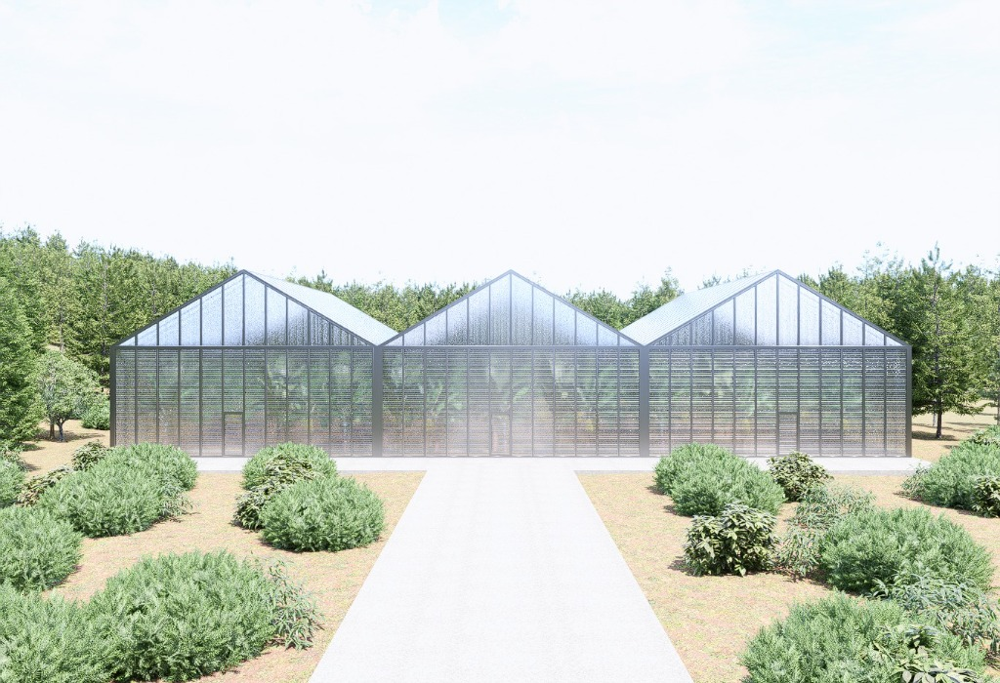

MİMARİ MÜHENDİSLİK & BOTANİK LÜKS
Doğa ile Kusursuz Yaşamı Buluşturan
Lüks Sera Mimarisi
Patentli çok cidarlı alüminyum profil sistemleri, entegre fotovoltaik solar jaluziler ve -20°C ekstrem hava koşullarına dayanıklı termal mühendislikle tasarlanan özel hobi seraları ve modern kış bahçeleri.
-20°C / +25°C
Termal İklim Kararlılığı
%100 EPDM
Sızdırmaz Yeşil Conta
10 Yıl
Yapısal Garanti Güvencesi
Öne Çıkan Seri
GM22-5 Ekstrem Serisi

Panoramik Askı Şömineli Kış Bahçesi
Dört mevsim doğanın kalbinde dinlenme, kitap okuma ve sevdiklerinizle keyifli anlar yaşama imkanı sunan modern mimari cam yapı.
🛡️ Çift Cidarlı Polycarbon
☀️ Solar Jaluzi Uyumlu
🔥 Şömine Entegrasyonu
🌱 Dikey Tarım Opsiyonu